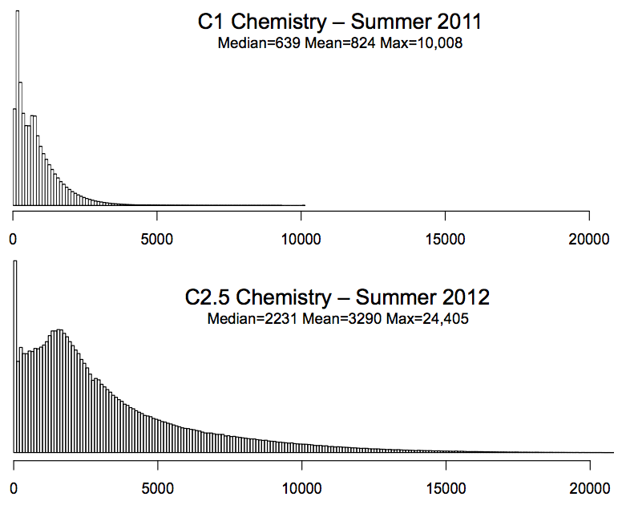
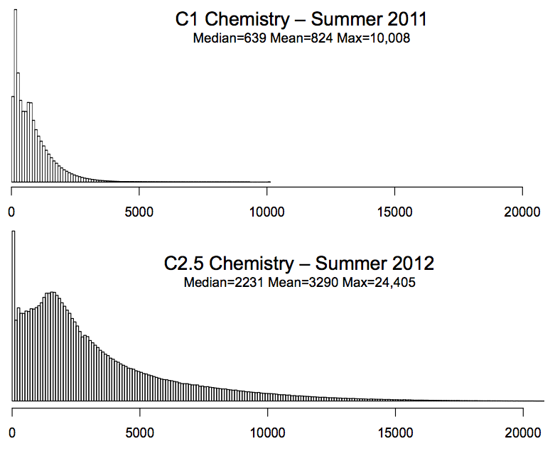
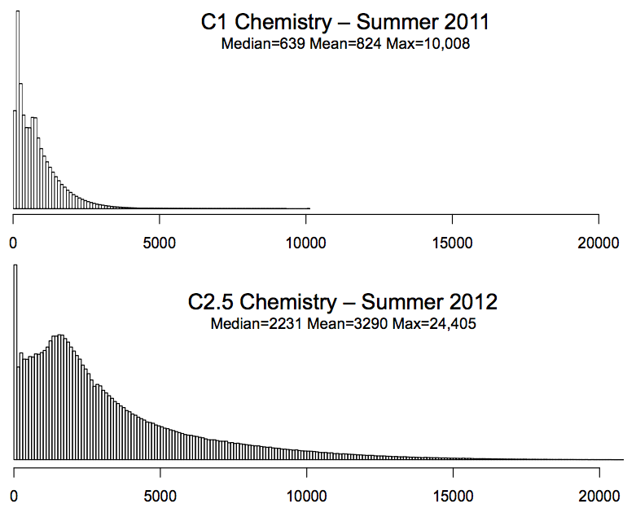
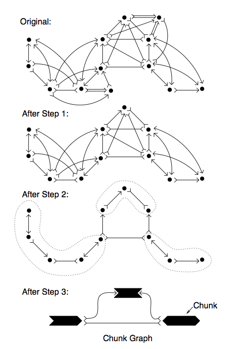

 {kind=link}
(Left) Alignment of a real pacbio read against the reference genome.
(Right) Distribution of read lengths on recent data
New sequencing instruments from Oxford Nanopore and Pacific Biosciences can sequence much longer fragments of DNA than any other sequencing technology (over 2000bp compared to 100-500bp), but at a much higher error rate (typically 15% error). The long read length makes the instruments very attractive for de novo assembly of complex genomes, but the high error rate prevents traditional approaches from being used. Design and implement an algorithm for assembling these reads de novo, such as using spaced seeds for nding overlaps or an error correction pipeline that can be applied directly to the reads. Requires strong algorithm and programming skills.
The three major phases that need to be address are (1) Overlapping, (2) Unitigging, and (3) Consensus generation. All three phases will need to be reconsidered to take into account the high error rate and long read length. The overall error rate on recent data is approximately 15% with 11% insertions, 3% deletions, 1% substitutions, although the errors are randomly distributed with across the read with a uniform probability. The reads also do not have uniform read length, but follow an approximately exponential distribution (mean = 3290, max=24,405 on recent data). In your analysis you should assume the reference genome has been oversampled to 30-fold sequence coverage.

(Left) Alignment of a real pacbio read against the reference genome.
(Right) Distribution of read lengths on recent data
mkdir ~/proj cd ~/proj git clone git://amos.git.sourceforge.net/gitroot/amos/amos cd amos ./bootstrap ./configure --prefix=`pwd` make make install
Download from here: http://sourceforge.net/projects/readsim/files/latest/download.
cd ~/proj tar xzvf readsim-1.0.tar.gz
See the wiki for more details.
cd ~/proj
mkdir small
head -500 readsim-1.0/example/ecoli/NC_000913.fna > small/ref.fa
./readsim-1.0/src/readsim.py sim fa \
--ref small/ref.fa \
--pre small/reads.2k.10x \
--tech pacbio_ec \
--read_mu 2000 --cov_mu 10
cd ~/proj/small ~/proj/amos/bin/toAmos -s reads.2k.10k.fasta -o reads.afg ~/proj/amos/bin/minimus reads ## Dump overlaps ~/proj/amos/bin/bank-report -b reads.bnk/ OVL > overlaps.afg ## Dump unitig layous ~/proj/amos/bin/bank-report -b reads.bnk/ LAY > layouts.afg ## Dump the alignment of reads in the unitigs ~/proj/amos/bin/analyzeSNPs -T -a -b -i reads.bnk/ > reads.align
The overlaps.afg file is a text file that contains the overlap information in an XML-like format that looks like this:
{OVL
adj:N
rds:1,2
scr:0
ahg:139
bhg:1685
}
This means that reads 1 and 2 overlap in "normal" orientation, meaning the end of read 1 overlaps the beginning of read 2. The read ids are internal numeric ids assigned by AMOS, the file reads.bnk/RED.0.map has the mapping from read number to the read name in the original fasta file. The "ahg" (ahang) is the number of bases of the first read in the overlap (read 1) that occur before the overlap and the "bhg" (bhang) are the number of bases of the second read (read 2) that extend past the overlap:
1: =============================================> <-- 1685bp --> 2: <-- 139bp --> =========================================================>
Because the reads may be from either strand of the DNA, the other valid orientation is "I" for innie:
1: =============================================> <-- 1685bp --> 2: <-- 139bp --> <=========================================================
Note the ahand and/or bhang may take negative values if the second read overlaps the beginning of the first read (negative ahang), or the first read extends past the second read (negative bhang)
A: <-- -ahang --> =========================================================> B: =============================================> <-- -bhang -->
The layouts.afg file is a text file that contains the overlap information in an XML-like format that looks like this:
{LAY
{TLE
clr:0,338
off:0
src:1
}
{TLE
clr:0,1883
off:139
src:2
}
{TLE
clr:0,3250
off:396
src:3
}
{TLE
clr:0,604
off:450
src:4
}
The first line "{LAY" marks the beginning of a unitig, and the "{TLE" lines mark the start of a read in a unitig. The first read in the unitig is read number 1 (using reads.bnk/RED.0.map to map from number to name) and the approximate offset of the read in the unitig is base 0 (the first read is always at base 0). The usable bases of the read are 0 through 338. The second read in the unitig is read number 2, with offset 139, and usable bases 0 through 1883. If the read is in reverse complement orientation, then the clr values will go from hi to low instead.
read 1: off: 0 len: 338 =====================> read 2: off: 139 len: 1883 =======================================> read 3: off: 396 len: 3250 ===========================================================> read 4: off: 450 len: 604 =================> ...
The reads.align file is a text file that contains the alignment of the reads in the unitigs that looks like this:
1 709 706 G 120 GGGG 30:30:30:30 1:2:3:4 1 710 707 C 120 CCCC 30:30:30:30 1:2:3:4 1 711 708 G 120 GGGG 30:30:30:30 1:2:3:4 1 712 709 C 60 CCTC 30:30:30:30 1:2:3:4 1 713 710 G 120 GGGG 30:30:30:30 1:2:3:4 1 714 711 C 120 CCCC 30:30:30:30 1:2:3:4 1 715 712 G 120 GGGG 30:30:30:30 1:2:3:4 1 716 713 G 120 GGGG 30:30:30:30 1:2:3:4 1 717 714 T 120 TTTT 30:30:30:30 1:2:3:4 1 718 715 C 120 CCCC 30:30:30:30 1:2:3:4 1 719 716 A 120 AAAA 30:30:30:30 1:2:3:4 1 720 716 - 60 A--- 30:30:30:30 1:2:3:4 1 721 717 C 120 CCCC 30:30:30:30 1:2:3:4 1 722 718 A 120 AAAA 30:30:30:30 1:2:3:4 1 723 719 A 120 AAAA 30:30:30:30 1:2:3:4 1 724 720 C 120 CCCC 30:30:30:30 1:2:3:4 1 725 721 G 150 GGGGG 30:30:30:30:30 1:2:3:4:5 1 726 722 T 150 TTTTT 30:30:30:30:30 1:2:3:4:5 1 727 723 T 150 TTTTT 30:30:30:30:30 1:2:3:4:5 1 728 724 A 150 AAAAA 30:30:30:30:30 1:2:3:4:5 1 729 725 C 150 CCCCC 30:30:30:30:30 1:2:3:4:5 1 730 726 T 150 TTTTT 30:30:30:30:30 1:2:3:4:5
The fields are (from the first line):
1 contig id 709 gapped contig position 706 contig position excluding gaps in the consensus G consensus base 120 consensus quality GGGG the bases of the reads covering this position 30:30:30:30 the quality values of the bases covering this position 1:2:3:4 the read ids covering this position (use reads.bnk/RED.0.map to convert to read names)
Note the disagreement of bases at position 712, the gaps at 720, and the start of read 5 at 725. If you just want the consensus sequence for the unitigs, you can look in reads.fasta
The goal of this project is to design an algorithm that can rapidly compute overlaps with at least a specified overlap length and quality given a large collection of long high error reads (max read length=L) in the presence of high error rate . One could compute overlaps between all-pairs of long reads using a dynamic programming algorithm, but this would be extremely expensive O(n^2) read pairs, each requiring O(L^2) time to measure. Instead design a hashing/clustering scheme that can quickly identify pairs of reads that are likely to overlap and/or a parallelization scheme to compute overlaps on many cores in parallel. To get started, you can use the real and simulated PacBio data to compute overlaps between reads, comparing your results to those computed with BLASR.

The goal of this project is to simplify the overlap graph down to the non-redundant set of overlaps comprising the unitigs (aka string graph). This project should also explore the consequencies of high error rates, non-uniform read lengths, and low coverage found with real data. To get started, you can using Minimus to compute overlaps between long low error rate reads, and you can compare your output to the output from minimus.

The goal of this project is given an approximate layout of reads which specifies the relative position of reads, compute their consensus sequence. The exact consensus can be computed using a dynammic programming algorithm, but is exponential in the number of reads. To get started you can use minimum to overlap and compute unitigs between long, low error reads, and try to replace the make-consensus module.